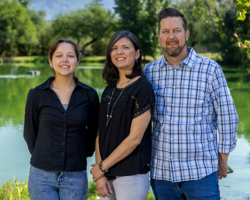

Natalie is currently serving her first term on the TUSD Governing Board. She is also a proud product of TUSD, having attended Bonillas Elementary, Alice Vail Middle School, and Rincon High School. Her sisters and mother were also graduates of Rincon, and her daughter and nephews are currently attending TUSD schools.
As a TUSD parent, Natalie has always been active in her daughter's education, serving as President of the Booster Club and Site Council. As a member of the Tucson Unified Parent Advocacy Council, Natalie continued to advocate for better policies, sustainable funding, and strong public schools at the AZ State Legislature.
Natalie has been involved in grassroots organizing for over 20 years in Tucson. She has participated in the public process at all levels — from local school boards, to national parks, to the U.S. House of Representatives. Currently at Disability Rights Arizona, she provides strategic leadership on community outreach and engagement.
Natalie is a native Tucsonan and a proud Wildcat. Natalie and her husband Josh have been married for over 20 years. They spend time with their daughter, Lily, enjoying what Tucson and Southern Arizona has to offer.